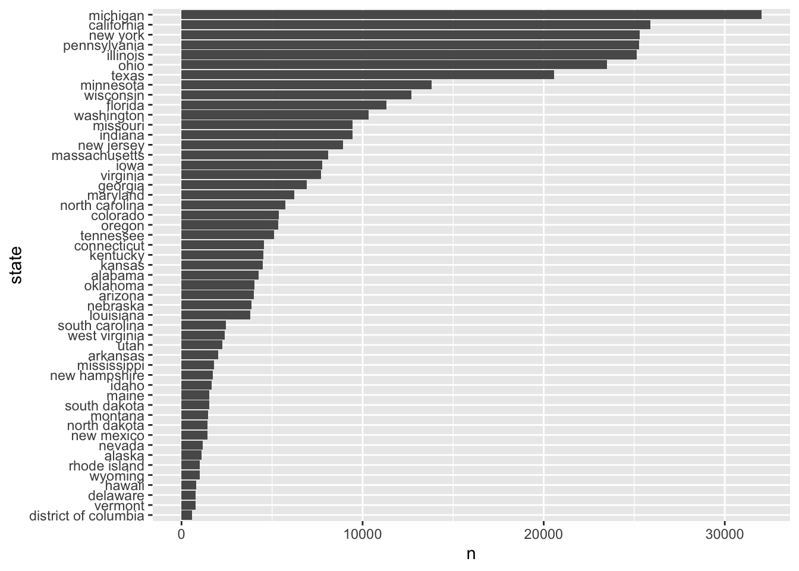
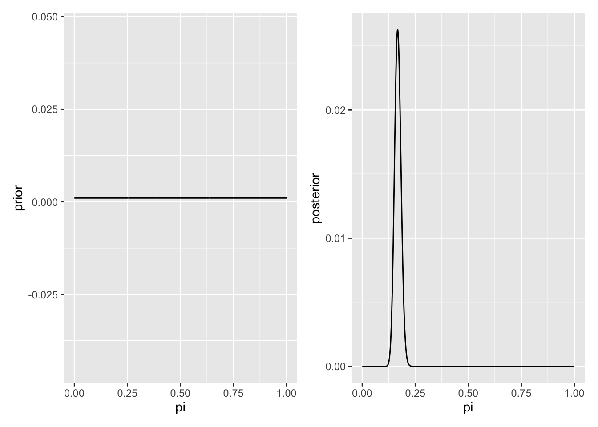
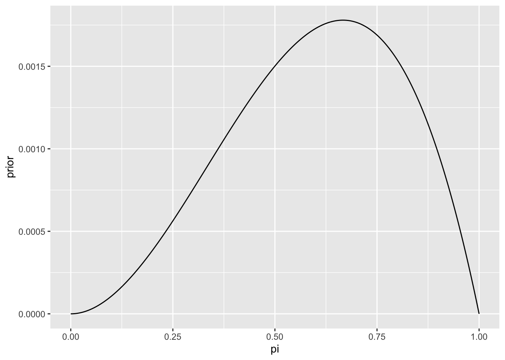
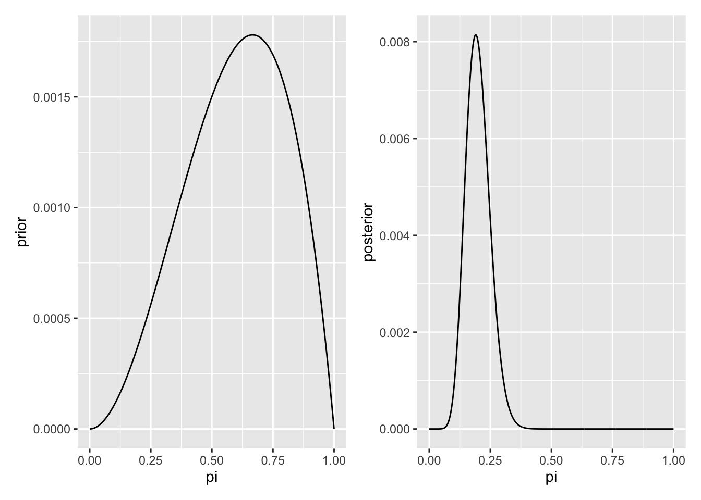

1 section 2.1
1.1 libraries
1.2 data
1.3 EDA
Collapse/show the code below
type n prior_pribabilities
fake 60 0.4
real 90 0.6
Total 150 1.0Null probability model (probability of an article being FAKE)
\[P(B) = 0.4\]
With 0.5 threshold, we would classify every article as real at the expense of 40% fake ones.
Let A = an article has exclamation point in the title, and B = article is fake. Then,
Collapse/show the code below
title_has_excl type n percent
FALSE fake 44 0.3333333
FALSE real 88 0.6666667
TRUE fake 16 0.8888889
TRUE real 2 0.1111111
Total - 150 2.0000000i.e.,
\(P(A|B)\) = P(an article has exclamation point in the title | article is fake) = 26.6%
and
\(P(A|B^c)\) = P(an article has exclamation point in the title | article is real) = 2.22%
We define likelihood function, \(L(. | A)\), when conditioned event is NOT certain, we are evaluating the relative compatibility of data with the uncertain event B.
\[L(B|A) = P(A|B)\]
On the other hand,
Collapse/show the code below
type title_has_excl n percent
fake FALSE 44 0.73333333
fake TRUE 16 0.26666667
real FALSE 88 0.97777778
real TRUE 2 0.02222222
Total - 150 2.00000000i.e.,
Pr(B|A) = 89%, and Pr(B^c|A) = 11%
Note:
\[P(B|A) + P(B^c|A) = 100%\]
but
\[P(A|B) + P(A|B^c) = 28.89% \neq 100%.\]
What if we want to have \(P(A) = P(article has excl in its title)\).
Collapse/show the code below
title_has_excl n percent
FALSE 132 0.88
TRUE 18 0.12
Total 150 1.00\[P(A) = 12\%, p(A^c) = 88\%\]
Create joint distribution
Collapse/show the code below
title_has_excl fake real Total
FALSE 0.2933333 0.58666667 0.88
TRUE 0.1066667 0.01333333 0.12
Total 0.4000000 0.60000000 1.001.4 Now we include data (features to update out model)
We want to calculate posterior probability (probability of the same event after observing more evidence that might affect that event)
\[Pr[B| evidence] = Pr[B|A]\]
1.5 now include more info
Collapse/show the code below
# A tibble: 150 × 3
type title_has_excl test_words_dummy
<fct> <lgl> <chr>
1 fake FALSE low
2 real FALSE high
3 fake TRUE high
4 real FALSE low
5 fake FALSE high
6 real FALSE low
7 fake FALSE low
8 fake TRUE high
9 fake FALSE high
10 real FALSE high
# … with 140 more rowsCollapse/show the code below
# A tibble: 3 × 3
test_words_dummy type n
<chr> <fct> <int>
1 high fake 9
2 high real 2
3 low fake 72 section 2.2
Collapse/show the code below

Collapse/show the code below
# A tibble: 4 × 2
region prior
<fct> <dbl>
1 midwest 0.388
2 south 0.241
3 northeast 0.206
4 west 0.165Collapse/show the code below
# A tibble: 4 × 4
region word_for_cola n percent
<fct> <chr> <int> <dbl>
1 south pop 7143 0.0510
2 west pop 18187 0.130
3 northeast pop 21103 0.151
4 midwest pop 93544 0.668 Collapse/show the code below
pop_vs_soda %>%
mutate(pop_dummy = if_else(word_for_cola == 'pop', TRUE, FALSE)) %>%
group_by(pop_dummy) %>%
count(region) %>%
group_by(region) %>%
mutate(percent = n/sum(n)) %>%
pivot_wider(names_from = region, values_from = percent, id_cols = pop_dummy) %>%
adorn_totals('col') %>%
adorn_totals('row') pop_dummy midwest northeast south west Total
FALSE 0.3552958 0.7266026 0.92077769 0.7057215 2.708398
TRUE 0.6447042 0.2733974 0.07922231 0.2942785 1.291602
Total 1.0000000 1.0000000 1.00000000 1.0000000 4.000000 pop midwest northeast south west
FALSE 0.3552958 0.7266026 0.92077769 0.7057215
TRUE 0.6447042 0.2733974 0.07922231 0.2942785 region n percent
midwest 0.3876981 0.3876981
northeast 0.2062472 0.2062472
south 0.2409192 0.2409192
west 0.1651356 0.1651356A = someone uses the word ‘pop’ L(M|A) = Pr(A|M) = 0.645 L(N|A) = Pr(A|N) = 0.273 L(S|A) = Pr(A|S) = 0.0792 L(W|A) = Pr(A|W) = 0.294
PRIOR VS Posterior probability P(S) = 0.241 Pr(S|A) = prior * likelihood/(normalization constant) = 0.241 * 0.0792/0.2826
Collapse/show the code below
pop_vs_soda %>%
mutate(pop_dummy = if_else(word_for_cola == 'pop', TRUE, FALSE)) %>%
group_by(pop_dummy) %>%
count(region) %>%
group_by(region) %>%
mutate(percent = n/sum(n)) %>%
filter(pop_dummy == TRUE) %>%
transmute(region, likelihood = percent) %>%
ungroup() %>%
bind_cols(pop_vs_soda %>% count(region) %>% transmute(prior = n/sum(n))) %>%
mutate(posterior = likelihood*prior/sum(likelihood*prior))# A tibble: 4 × 4
region likelihood prior posterior
<fct> <dbl> <dbl> <dbl>
1 midwest 0.645 0.388 0.668
2 northeast 0.273 0.206 0.151
3 south 0.0792 0.241 0.0510
4 west 0.294 0.165 0.130 3 section 2.3
Kasparov
3.1 pi has prior discrete distribution
Collapse/show the code below
# A tibble: 3 × 2
pi prior
<dbl> <dbl>
1 0.2 0.1
2 0.5 0.25
3 0.8 0.65Collapse/show the code below
df %>%
mutate(likelihood = dbinom(1, 6, pi)) %>%
mutate(posterior_num = prior*likelihood) %>%
mutate(posterior = posterior_num/sum(posterior_num)) %>%
mutate(new_likelihood = dbinom(6, 10, pi)) %>%
mutate(new_posterior_num = posterior*new_likelihood) %>%
mutate(new_posetior = new_posterior_num /sum(new_posterior_num)) %>%
mutate(new_new_ll = dbinom(14, 16, pi)) %>%
mutate(new_new_post = new_posetior*new_new_ll/sum( new_posetior*new_new_ll))# A tibble: 3 × 10
pi prior likelihood poste…¹ poste…² new_l…³ new_p…⁴ new_p…⁵ new_n…⁶ new_n…⁷
<dbl> <dbl> <dbl> <dbl> <dbl> <dbl> <dbl> <dbl> <dbl> <dbl>
1 0.2 0.1 0.393 3.93e-2 0.617 0.00551 0.00340 0.0424 1.26e-8 9.95e-8
2 0.5 0.25 0.0937 2.34e-2 0.368 0.205 0.0754 0.940 1.83e-3 3.22e-1
3 0.8 0.65 0.00154 9.98e-4 0.0157 0.0881 0.00138 0.0172 2.11e-1 6.78e-1
# … with abbreviated variable names ¹posterior_num, ²posterior,
# ³new_likelihood, ⁴new_posterior_num, ⁵new_posetior, ⁶new_new_ll,
# ⁷new_new_post3.2 pi has prior Uniform distribution
Collapse/show the code below
# A tibble: 1,000 × 2
pi prior
<dbl> <dbl>
1 0 0.001
2 0.00100 0.001
3 0.00200 0.001
4 0.00300 0.001
5 0.00400 0.001
6 0.00501 0.001
7 0.00601 0.001
8 0.00701 0.001
9 0.00801 0.001
10 0.00901 0.001
# … with 990 more rowsCollapse/show the code below
# A tibble: 1,000 × 5
pi prior likelihood posterior_num posterior
<dbl> <dbl> <dbl> <dbl> <dbl>
1 0 0.001 0 0 0
2 0.00100 0.001 7.44e-185 7.44e-188 4.48e-185
3 0.00200 0.001 5.72e-155 5.72e-158 3.44e-155
4 0.00300 0.001 1.41e-137 1.41e-140 8.47e-138
5 0.00400 0.001 2.66e-125 2.66e-128 1.60e-125
6 0.00501 0.001 7.88e-116 7.88e-119 4.74e-116
7 0.00601 0.001 3.95e-108 3.95e-111 2.37e-108
8 0.00701 0.001 1.18e-101 1.18e-104 7.10e-102
9 0.00801 0.001 4.49e- 96 4.49e- 99 2.70e- 96
10 0.00901 0.001 3.54e- 91 3.54e- 94 2.13e- 91
# … with 990 more rowsCollapse/show the code below

3.3 pi has prior beta distribution
Collapse/show the code below
# A tibble: 1,000 × 2
pi prior
<dbl> <dbl>
1 0 0
2 0.00100 0.0000000120
3 0.00200 0.0000000480
4 0.00300 0.000000108
5 0.00400 0.000000192
6 0.00501 0.000000299
7 0.00601 0.000000431
8 0.00701 0.000000586
9 0.00801 0.000000764
10 0.00901 0.000000966
# … with 990 more rows
Collapse/show the code below

Collapse/show the code below
# A tibble: 5 × 2
pi prior
<dbl> <dbl>
1 0.1 0.3
2 0.3 0.1
3 0.5 0.4
4 0.8 0.1
5 0.9 0.1Collapse/show the code below
# A tibble: 5 × 5
pi prior likelihood posterior_num posterior
<dbl> <dbl> <dbl> <dbl> <dbl>
1 0.1 0.3 0.328 0.0984 0.498
2 0.3 0.1 0.360 0.0360 0.182
3 0.5 0.4 0.156 0.0625 0.316
4 0.8 0.1 0.0064 0.00064 0.00324
5 0.9 0.1 0.00045 0.000045 0.0002284 section 2.5 - exercises
4.1 Exercise 2.13 (Lactose intolerance)
Fatima wants to learn more about the proportion of adults who are lactose intolerant, \(\pi\). Fatima surveys a random sample of 80 adults and 47 are lactose intolerant.
So, \(Y:=\) number of people who are lactose intolerant among 80 people, i.e., \(Y\)~ Binomial(n = 80, \(\pi\)).
Collapse/show the code below
# A tibble: 4 × 5
pi prior likelihood posteriro_num posteriro
<dbl> <dbl> <dbl> <dbl> <dbl>
1 0.4 0.1 0.000301 0.0000301 0.000649
2 0.5 0.2 0.0264 0.00527 0.114
3 0.6 0.44 0.0880 0.0387 0.834
4 0.7 0.26 0.00929 0.00242 0.0520 Collapse/show the code below
# A tibble: 4 × 5
pi prior likelihood posteriro_num posteriro
<dbl> <dbl> <dbl> <dbl> <dbl>
1 0.4 0.1 4.91e-27 4.91e-28 5.06e-26
2 0.5 0.2 1.29e- 7 2.57e- 8 2.65e- 6
3 0.6 0.44 2.21e- 2 9.72e- 3 1.00e+ 0
4 0.7 0.26 3.80e-12 9.87e-13 1.02e-104.2 Exercise 2.14 (Late bus)
Li Qiang takes the 8:30am bus to work every morning. If the bus is late, Li Qiang will be late to work. To learn about the probability that her bus will be late (\(\pi\)), Li Qiang first surveys 20 other commuters: 3 think \(\pi\) is 0.15, 3 think \(\pi\) is 0.25, 8 think \(\pi\) is 0.5, 3 think \(\pi\) is 0.75, and 3 think \(\pi\) is 0.85.
Collapse/show the code below
# A tibble: 5 × 5
pi prior likelihood posteriro_num posteriro
<dbl> <dbl> <dbl> <dbl> <dbl>
1 0.15 0.15 0.190 0.0285 0.355
2 0.25 0.15 0.252 0.0377 0.470
3 0.5 0.4 0.0349 0.0140 0.174
4 0.75 0.15 0.000115 0.0000173 0.000215
5 0.85 0.15 0.00000101 0.000000152 0.00000189